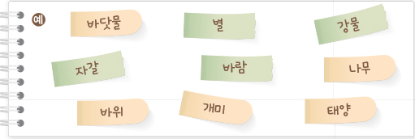

지구를 구성하는 것은
이 단원을 배우면 • 지구계의 구성 요소를 설명할 수 있다.
과학과 핵심 역량 • 과학적 사고력 / 과학적 탐구 능력 / 과학적 의사소통 능력

함께 시작하기
기억에 남는 체험 활동 장소
체험 활동을 하며 보았던 자연의 모습을 이야기해 보자.
통영 소매물도
우리나라는 산이 많고 바다에 접해 있어 다양한 자연 경관을 볼 수 있는 곳이 많다.
산에 오르면 다양한 모양의 바위와 계절마다 다른 식물을 볼 수 있고,
바다로 가면 해안가의
지형과 섬을 볼 수 있다.
또 해가 뜨거나 지는 하늘의 모습도 빼놓을 수 없다.
다음 활동을 통해 자연의 다양한 구성 요소들을 분류해 보자.
목표
준비물 확인하기
자료 수집과 해석
모둠별로 우리 주위에서 볼 수 있는 자연의 구성 요소를 접착식 메모지에 써 보자.

1. 자연의 구성 요소들을 분류할 수 있는 기준에는 어떤 것이 있는지 생각해 보자.
2. 기준에 따라 자연의 구성 요소를 분류하여 빈 종이에 붙여 보자.
분류할 수
있는 기준
|
생물
|
|
|
|
|
자연의
구성 요소 |
개미,
나무
|
|
|
|
|
예시 답안
언제? 작년 5월 학교에서 친구들과 함께 체험 활동을 갔을 때
어디서? 경주에서
무엇을 보았나? 불국사의 청운교와 백운교를 보았는데, 암석으로 만든 계단이 있었다.
불국사 주위로는 울창한 숲이 있었고, 노을이 지고 있어 경치가 뛰어났다.
스스로 생각하여 답을 적어 본
뒤에 정답을 확인하세요.
예시 답안
분류할 수
있는 기준
|
생물 |
돌 |
공기 |
물 |
우주(지구 바깥) |
자연의
구성 요소 |
개미, 나무 |
자갈, 바위 |
바람 |
바닷물, 강물 |
별, 태양 |
스스로 생각하여 답을 적어 본
뒤에 정답을 확인하세요.
땅이 생긴 모양